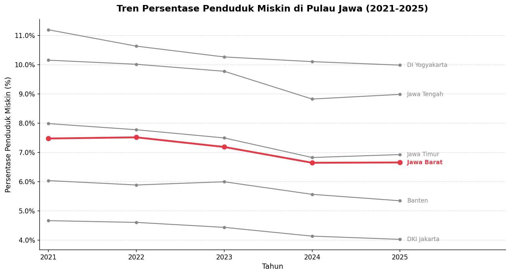
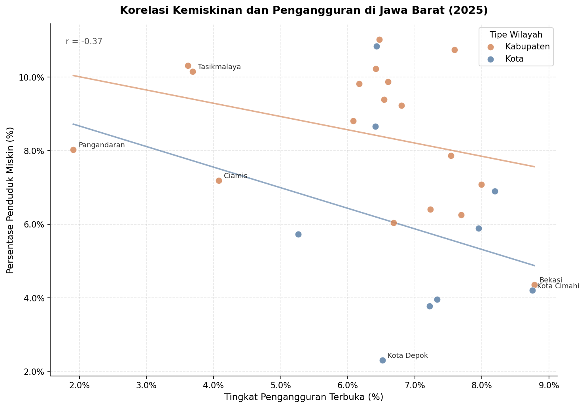
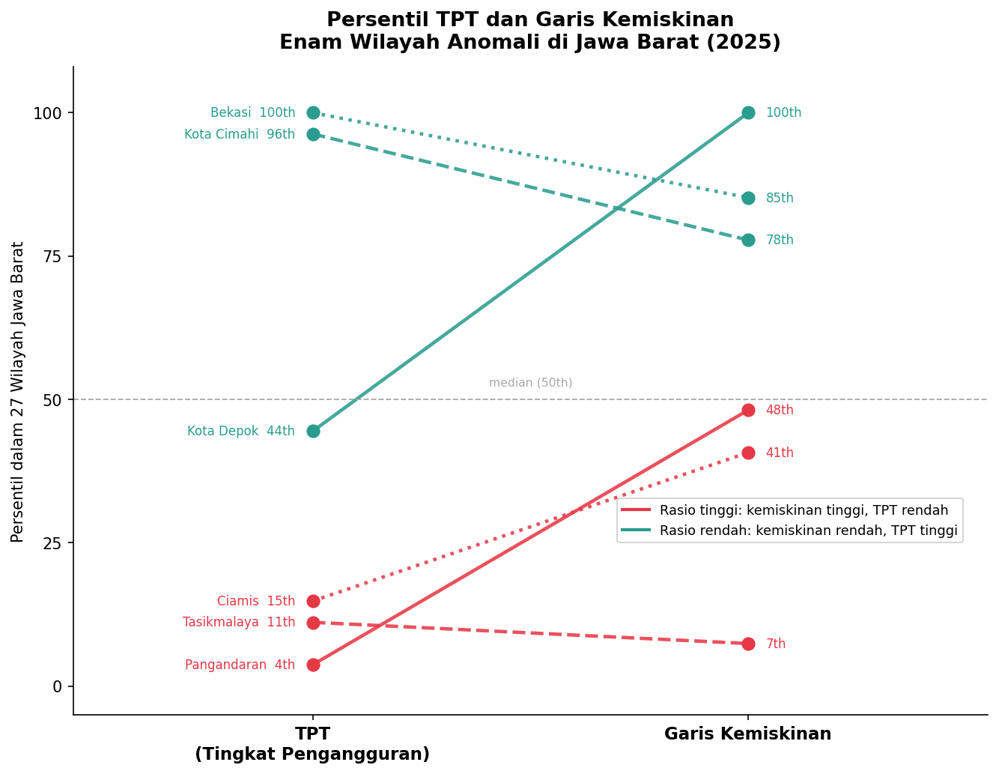

IF4061 Visualisasi Data | Kelompok 01 | Institut Teknologi Bandung | 2025/2026
Ketika Bekerja Belum Cukup di Jawa Barat
Paradoks Kemiskinan dan Pengangguran di 27 Kabupaten/Kota, 2021-2025

Seluruh provinsi Pulau Jawa mencatat penurunan kemiskinan dari 2021 ke 2025, namun
Jawa Tengah dan Jawa Timur mengalami kenaikan tipis di 2025. Jawa Barat berada di
posisi menengah (6,65-7,52%), lebih rendah dari DI Yogyakarta dan Jawa Tengah, tetapi
masih di atas DKI Jakarta dan Banten. Tren positif ini menunjukkan ruang perbaikan
yang masih terbuka untuk mengejar provinsi-provinsi yang lebih maju.
Empat kabupaten melampaui 10%, yaitu Indramayu (11,02%), Cirebon (10,23%),
Majalengka (10,31%), dan Tasikmalaya (10,15%).
Tiga kota koridor utara di bawah 4%, yaitu Kota Depok (2,31%),
Kota Bandung (3,78%), dan Kota Bekasi (3,96%).
Pola geografis ini mencerminkan pemisahan antara ekonomi
pertanian subsisten di selatan-timur dan ekonomi formal
industri di utara.

Korelasi antara pengangguran dan kemiskinan di Jawa Barat bersifat negatif dan lemah
(r = -0,37) sehingga semakin rendah pengangguran, justru semakin tinggi kemiskinan di sejumlah
wilayah. Pangandaran (TPT 1,91%, kemiskinan 8,03%), Tasikmalaya (3,69%, 10,15%),
dan Ciamis (4,08%, 7,19%) membentuk anomali paling ekstrem dari kelompok Kabupaten.
Di sisi lain, Kota Depok, Kota Cimahi, dan Bekasi mencatat TPT tinggi dengan
kemiskinan terendah se-provinsi.

Tiga kota urban (hijau) memiliki garis kemiskinan di persentil tertinggi, mengonfirmasi
bahwa tingginya standar biaya hidup diimbangi pendapatan formal yang jauh melampaui
ambang batas sehingga kemiskinan tetap rendah meski pengangguran tinggi.
Tiga kabupaten pertanian (merah) memiliki TPT di persentil terbawah dan garis kemiskinan
di kisaran bawah hingga menengah. Upah sektor pertanian di wilayah tersebut berada di
bawah bahkan standar subsisten yang relatif rendah sehingga bekerja penuh tidak cukup
untuk keluar dari kemiskinan.